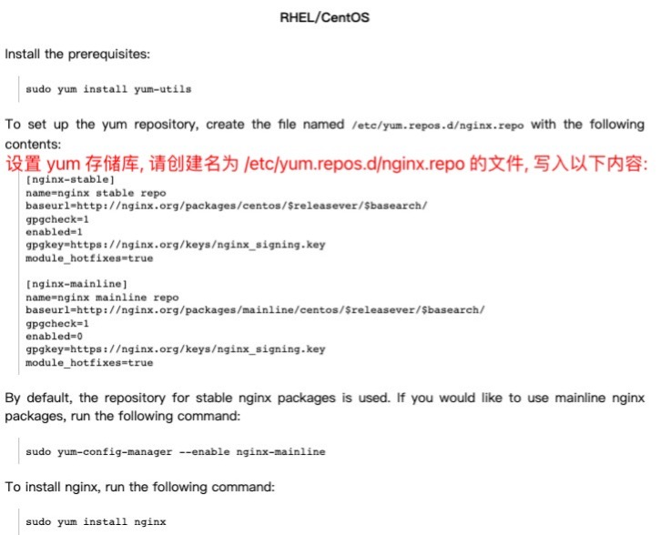
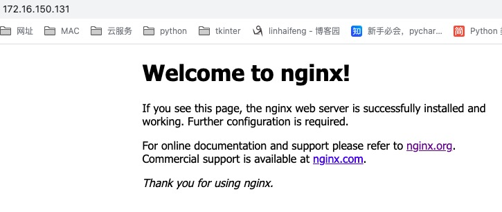

软件包管理之yum
yum命令¶
基于RPM包管理, 能够从指定的服务器自动下载RPM包并且安装, 可以自动处理依赖性关系, 并且一次安装所有依赖的软件包, 无须繁琐地一次次下载、安装.
yum命令相较于rpm命令,yum可以自动解决依赖性的问题.
其原理在于:
使用yum安装软件包时,会去某个仓库找软件包,此仓库已经事先将该软件包以及相关依赖全都准备好了..
仓库: 本质上就是存放所有相关软件包的一个文件夹..
该文件夹下必定有个名为repodata的文件夹记录了文件夹所包含软件包之间的依赖关系..
## yum命令来自于哪个软件包
[root@localhost ~]# rpm -qf /usr/bin/yum
yum-3.4.3-168.el7.centos.noarch
## 安装yum软件包后生成的配置文件
[root@localhost ~]# rpm -qc yum
/etc/logrotate.d/yum
/etc/yum.conf
/etc/yum/version-groups.conf
选项¶
查询仓库:
yum repolist -- 查看可用仓库
yum repolist all -- 查看所有仓库(包含启用的与禁用的)
yum-config-manager --disable 仓库名 -- 关闭指定仓库
yum-config-manager --enable 仓库名 -- 开启指定仓库
去掉.repo后缀就是仓库名 ls /etc/yum.repos.d/
本质是将 /etc/yum.repos.d/CentOS-Base.repo文件中对应仓库的enabled值进行更改
enabled默认值为1 0关闭) 1(开启)
查询软件包:
yum list -- 列出所有可用仓库里的所有软件包( 包括 已经安装的 和 可以安装的 )
可结合管道与查看文件的一些命令一起使用 eg: yum list|less ; yum list|more
yum grouplist -- 列出所有可用仓库中的软件包组
eg: 软件包组之一的 安全性工具 里就包含了一堆相关的软件包
yum provides 文件路径 -- 查看某个文件由哪个软件包产生的
可用于查看命令来自哪个软件包 等同于 rpm -qf
提一嘴,加 -y 选项 (表明yes) 可以非交互式的进行安装、卸载、重装、更新..
安装:
yum install 软件包名 -y -- 安装软件包
若已经安装啦,会在现有的仓库里面看看有无更高的版本,有的话会进行升级处理.. 最好卸载后装新的!!
eg: yum remove nginx-* -y
yum groupinstall "软件包组名字" -y or yum groups install "软件包组名字" -y -- 安装软件组
注意: 软件组名字需要加双引号
卸载:
yum remove 软件包名 -y -- 卸载软件包
yum groupremove "软件组名字" -y or yum groups remove "软件组名字" -y -- 卸载软件组
重装: yum reinstall 软件包名 -y -- 不小心删除了配置文件的时,可以reinstall一下,会补充没有的部分
Ps: 晓得预期的结果的前提下,不打印结果 yum reinstall httpd -y &>/dev/null
注意: reinstall仅限于在测试环境中搞,生产环境别轻易这样做!!!容易出问题.
更新: 不要作死,不要作死,不要轻易更新..
yum update -y -- 会更新所有软件包,包括OS内核,通常只在刚装完系统时执行
yum update 软件包名 -y -- 更新某个软件包
yum check-update -- 检查有哪些可以更新的软件包
通常要更新时,测试环境、与线上1比1的环境都要实验下,没问题后, 再更新线上几台机器试试,观察几周时间,再将集群慢慢的更新...保证业务能正常运行的情况下,缓慢的从局部到全体更新...
缓存:
yum makecache -- 制作元数据缓存
yum clean all -- 清除元数据缓存
历史记录:
yum history -- 查看执行过的yum命令历史记录
yum history info ID号 -- 查看具体某一条yum命令的详细信息,干了什么事
yum history undo ID号 -- 撤销执行过的某条yum命令,即相当于没有执行这条yum命令..
eg: 某条yum命令是卸载某个软件包,那么执行undo后,会重新下载这个软件包..
注意: 无论yum安装的软件来自何方 yum install rpm包网络地址 , 遇到依赖问题, yum都会以自己仓库中的repodata存储的依赖关系为准.. 多个仓库的话, 会依次检索..
文件 = 文件元数据 + 实际内容
安装软件包就是在安装一堆文件,`yum makecache`缓存的是文件的元数据(权限、大小、时间、此文件与其它文件的关联等).. 执行`yum makecache`后,可以提速,提的是yum命令的查询速度`yum list`,并没有提升软件包的下载速度..
Q:能否缓存软件包呢？？
A:若yum的仓库在网上的话,yum发请求将软件包下载到本地,安装完成后,默认情况yum会自动将软件包删除..
下次还想安装同一软件包,就得重复这个请求下载的过程..
默认软件包下载安装后会自动删除这一操作是跟`/etc/yum.conf`文件有关的..
可以看到keepcache默认等于0,若`keepcache=1`就代表yum会将rpm包安装后丢到cachedir属性指定的文件夹下..
[root@localhost yum.repos.d]# vim /etc/yum.conf
[main]
cachedir=/var/cache/yum/$basearch/$releasever
keepcache=0
debuglevel=2
logfile=/var/log/yum.log
exactarch=1
obsoletes=1
gpgcheck=1
plugins=1
installonly_limit=5
bugtracker_url=http://bugs.centos.org/set_project.php?project_id=23&ref=http://bugs.centos.org/bug_report_page.php?category=yum
distroverpkg=centos-release
... ... ...
实验验证¶
Ps: shell远程连接开了两个窗口,第一个窗口的yum命令正在执行,第二个窗口使用yum时会提示yum对应的进程正在运行,即同一时间在一台机器上只能有一个yum命令运行...
当我们确定后台运行的yum没用时,那么运行命令 pkill -9 yum 可干掉后台正在运行的那个yum..
## 观察结果,可以看到当前可以的仓库有三个 Base、Extras、Updates
[root@localhost ~]# yum repolist
已加载插件：fastestmirror, langpacks
Loading mirror speeds from cached hostfile
* base: mirrors.nju.edu.cn
* extras: mirrors.163.com
* updates: mirrors.nju.edu.cn
源标识 源名称 状态
!base/7/x86_64 CentOS-7 - Base 10,072
!extras/7/x86_64 CentOS-7 - Extras 512
!updates/7/x86_64 CentOS-7 - Updates 4,101
repolist: 14,685
## 关闭与启动仓库 Base
yum-config-manager --disable Base
yum-config-manager --enable Base
[root@localhost yum.repos.d]# which ifconfig
/usr/sbin/ifconfig
[root@localhost yum.repos.d]# yum provides /usr/sbin/ifconfig
已加载插件：fastestmirror, langpacks
Loading mirror speeds from cached hostfile
* base: mirrors.nju.edu.cn
* extras: mirrors.nju.edu.cn
* updates: mirrors.nju.edu.cn
net-tools-2.0-0.25.20131004git.el7.x86_64 : Basic networking tools
源 :@anaconda
匹配来源：
文件名 :/usr/sbin/ifconfig
## 安装软件包 以及 软件组
yum install httpd -y
yum groupinstall "开发工具" -y
## 卸载
yum remove httpd -y
yum groupremove "开发工具" -y
## 更新
yum update httpd -y
yum源分类¶
要使用yum前,需要准备一个yum源/仓库, 可以是一个互联网上的仓库,也可以是本地自己搭建的仓库.
仓库里面有什么呢?里面全部都是.rpm的软件包.
一台linux,可以添加N多个yum源, 能搜索的软件包数量就是N个yum源之和..
1> 本地源: 把本地的文件夹做成了yum源
方式一:
step1: 采集一系列相关的软件包放在本地某一个目录下;
step2: yum install createrepo -y
createrepo 目录路径
-- 创建仓库,会在该目录下生成一个名为repodata的文件夹..用于存放依赖关系.
step3: 修改配置
vim /etc/yum.repo.d/仓库名.repo --- 必须以.repo结尾
方式二: 将镜像文件作为本地源
2> 网络源:
base基础源 -- 放置的是一些常用的软件包;
epel扩展源 -- 放置的是一些扩展/额外的软件包;
与服务相关的源(官网) -- 某一个软件包所在官网提供的源.. eg: nginx官网的软件包源
镜像文件作为本地源¶
step1: 准备工作¶
干掉系统默认的yum源
"""
`/etc/yum.repos.d/`目录下全是以`.repo`结尾的yum仓库配置文件..
yum命令在运行时会去检索这些配置文件..
"""
[root@localhost ~]# cd /etc/yum.repos.d/
[root@localhost yum.repos.d]# ls
CentOS-Base.repo CentOS-Debuginfo.repo CentOS-Media.repo CentOS-Vault.repo
CentOS-CR.repo CentOS-fasttrack.repo CentOS-Sources.repo CentOS-x86_64-kernel.repo
"""
我们通常不会使用系统默认的这些yum仓库
但删除不是好习惯.. 我们选择使用mv命令移动下.让yum命令找不到就可以啦.
Ps: mv后,`yum list`还有结果,列出的只是已经安装了的软件包.. 若安装未安装的软件包肯定是安装不了的!!
"""
[root@localhost yum.repos.d]# mkdir bak
## 在yum.repos.d目录下执行命令 `mv bak/* .` 就可以还原回来啦
[root@localhost yum.repos.d]# mv *.repo bak/
[root@localhost yum.repos.d]# ls
bak
[root@localhost yum.repos.d]# pwd
/etc/yum.repos.d
[root@localhost yum.repos.d]# yum repolist
已加载插件：fastestmirror, langpacks
Loading mirror speeds from cached hostfile
repolist: 0 ## 验证结果不为0的话 yum clean all 清除下元数据缓存
step2: 挂载镜像¶
详见
10_软件包管理之rpm.md中挂载镜像这一部分内容..
[root@localhost opt]# df
文件系统 1K-块 已用 可用 已用% 挂载点
devtmpfs 480924 0 480924 0% /dev
tmpfs 497820 0 497820 0% /dev/shm
tmpfs 497820 27432 470388 6% /run
tmpfs 497820 0 497820 0% /sys/fs/cgroup
/dev/mapper/centos-root 17811456 5243408 12568048 30% /
/dev/sda1 1038336 258412 779924 25% /boot
tmpfs 99564 36 99528 1% /run/user/0
tmpfs 99564 0 99564 0% /run/user/1001
/dev/sr0 4600876 4600876 0 100% /opt
[root@localhost opt]# ls
CentOS_BuildTag EULA images LiveOS repodata RPM-GPG-KEY-CentOS-Testing-7
EFI GPL isolinux Packages RPM-GPG-KEY-CentOS-7 TRANS.TBL
step3: 编辑repo文件¶
仓库配置文件叫啥名并不重要,但后缀必须得是.repo
仓库配置文件里的baseurl属性值 指定到repodata文件夹的父亲目录即可 ..跟rpm包在哪无关..
因为yum命令在执行时,会通过repodata里面的数据来找到软件包的位置及相关依赖..
[root@localhost yum.repos.d]# cd /etc/yum.repos.d/
[root@localhost yum.repos.d]# ls
bak
[root@localhost yum.repos.d]# vim local.repo
"""
[local] # 仓库的实际名字,任意
name="this is local repo" # 仓库的描述,任意
baseurl=file:///opt # 仓库位置,一般会出现四种前缀 http:// https:// ftp:// file://
enabled=1 # 启用仓库, 默认enabled=1 不写也可以
gpgcheck=0 # 检查安装的rpm是否是合法的,通常设置为0,0表示不检验
Ps: 配置本地源,`file://`是固定开头,代表是从本地找.往后再跟repodata的父级目录路径 `file:///opt`
"""
[root@localhost yum.repos.d]# cat local.repo
[local]
name="this is local repo"
baseurl=file:///opt
enabled=1
gpgcheck=0
step4: 查询可用仓库¶
## 进行验证
[root@localhost ~]# yum repolist
已加载插件：fastestmirror, langpacks
Loading mirror speeds from cached hostfile
local | 3.6 kB 00:00:00
(1/2): local/group_gz | 153 kB 00:00:00
(2/2): local/primary_db | 3.3 MB 00:00:00
源标识 源名称 状态
local "this is local repo" 4,070
repolist: 4,070
开源的yum源/网络源¶
Base基础源¶
"""▲ Base基础源
阿里云的Base基础源:
`wget -O /etc/yum.repos.d/CentOS-Base.repo http://mirrors.aliyun.com/repo/Centos-7.repo`
163的Base基础源:
`wget -O /etc/yum.repos.d/CentOS-Base.repo http://mirrors.163.com/.help/CentOS7-Base-163.repo`
"""
[root@localhost ~]# wget -O /etc/yum.repos.d/CentOS-Base.repo http://mirrors.aliyun.com/repo/Centos-7.repo
... ... ...
2022-08-11 06:42:38 (54.8 KB/s) - 已保存 “/etc/yum.repos.d/CentOS-Base.repo” [2523/2523])
[root@localhost ~]# cd /etc/yum.repos.d/
[root@localhost yum.repos.d]# ls
bak CentOS-Base.repo local.repo
epel扩展源¶
EPEL是由 Fedora 社区打造, 为 RHEL 及衍生发行版如 CentOS、Scientific Linux 等提供高质量软件包的项目. 装上了 EPEL之后,就相当于添加了一个第三方源. 但提供的版本往往是很滞后的,因为安全稳定是重点..
"""▲ epel扩展源
阿里云的epel扩展源如下:(用wget命令也可以)
`curl -o /etc/yum.repos.d/epel.repo http://mirrors.aliyun.com/repo/epel-7.repo`
也可以通过安装epel-release软件包来自动生成扩展源:
`yum install epel-release -y`
"""
[root@localhost yum.repos.d]# yum install epel-release -y
... ... ...
[root@localhost yum.repos.d]# ls
bak CentOS-Base.repo epel.repo epel-testing.repo local.repo
配置nginx官网源¶
# 可以看到epel扩展源里也提供了nginx的软件包
# 但版本1.20.1也不是nginx稳定版最新的(epel源提供的版本往往会比较滞后 当前官网最新的稳定版本是1.22.0)..
[root@localhost yum.repos.d]# yum list | grep nginx.x86_64
collectd-nginx.x86_64 5.8.1-1.el7 epel
nginx.x86_64 1:1.20.1-9.el7 epel
pcp-pmda-nginx.x86_64 4.3.2-13.el7_9 updates
sympa-nginx.x86_64 6.2.68-1.el7 epel
从官网配置nginx的rpm源的步骤解析如下:
1> 输入网址https://nginx.org/,点击右边栏中的download
2> Mainline version 官方维护版本; Stable version 稳定版本; Legacy versions历史版本;
Source Code 源代码; Pre-Built Packages 预构建包.. 点击 Pre-Built Packages
Mainline、Stable、Legacy下载的都是源码包!!
3> 往下滑, 直到 RHEL/CentOS 小节.. 按照官方提示进行操作..

"""
[nginx-stable] 稳定版本; [nginx-mainline] 维护版本
我们通常会使用稳定版本!所以前者enabled的值为1,后者为0.
http://nginx.org/packages/centos/$releasever/$basearch/
$releasever 系统的发行版本(当前环境是7)
$basearch 架构(当前环境是x86_64)
两个变量都根据所在平台不同动态获取值!!!
Ps:输入网址`http://nginx.org/packages/centos/7/x86_64/`可以发现当前路径下有repodata文件夹!!!
佐证了 baseurl属性值指定到repodata文件夹的父亲目录即可 这一结论!!!
"""
[root@localhost yum.repos.d]# ls
bak CentOS-Base.repo epel.repo epel-testing.repo local.repo
[root@localhost yum.repos.d]# vim nginx.repo
[root@localhost yum.repos.d]# cat nginx.repo
[nginx-stable]
name=nginx stable repo
baseurl=http://nginx.org/packages/centos/$releasever/$basearch/
gpgcheck=1
enabled=1
gpgkey=https://nginx.org/keys/nginx_signinz.key
module_hotfixes=true
[nginx-mainline]
name=nginx mainline repo
baseurl=http://nginx.org/packages/mainline/centos/$releasever/$basearch/
gpgcheck=1
enabled=0
gpgkey=https://nginx.org/keys/nginx_signing.key
module_hotfixes=true
[root@localhost yum.repos.d]#
[root@localhost yum.repos.d]# yum repolist | grep nginx
nginx-stable/7/x86_64 nginx stable repo 280
"""
若安装nginx过程中,出错提示 获取 GPG 密钥失败
执行命令`rpm --import https://nginx.org/keys/nginx_signing.key`后再安装..
"""
yum remove nginx-* -y ## 保持环境的干净
yum install nginx -y ## 安装的是nginx官网源里的(因为nginx官网源里的版本比epel源里的高)
补充: 执行yum install nginx-* -y, 试图下载nginx官方源里相关安装包, 在此过程中报错的解决...
简单来说,epel源与官方源冲突,干掉epel源再安装; 官方源安装过程中缺少的依赖通过epel源下载安装..Hhhh.
"""
当前有阿里云的Base基础源、阿里云的epel源、镜像文件的本地源、nginx的官方源
"""
[root@localhost yum.repos.d]# ls
bak bak1 CentOS-Base.repo epel.repo epel.repo.rpmsave local.repo nginx.repo
"""▲ 做了个实验,只留下nginx的官方源
(1)执行`yum install nginx -y`命令
只下载了安装nginx-1.22.0-1.el7.ngx.x86_64.rpm包..
不是废话嘛,指定下载的软件包名就是nginx,只不过该软件包没有依赖罢了..
(2))执行`yum install nginx* -y`命令
理论上会下载nginx的官方源中所有的最新版本的rpm包
(举个抽象的例子 有四个rpm包 A-1.0.1 A.1.0.2 B-1.1.2 B-1.1.3 最终只会下载A.1.0.2和B-1.1.3)
试着执行命令,但中途报错啦!!报错如下:
`nginx-nr-agent-2.0.0-12.el7.ngx.noarch (nginx-stable)软件包需要依赖 python-daemon`
python-daemon包nginx的官方源没有..
(可以访问http://nginx.org/packages/centos/7/x86_64/RPMS/,下面全是nginx开头的rpm包,没有其他的)
解决的话就需要epel扩展源的帮忙..
"""
"""▲ 不动yum源 包含epel源和nginx官方源
"""
执行`yum install nginx* -y`命令,依旧会下载nginx官方源那个软件包,报那个错误,所以先解决下..
`yum install python-daemon`通过epel扩展源解决了依赖包的下载安装
继续满怀期望的执行`yum install nginx* -y`发现,冲突啦!!
epel源里的软件包版本跟nginx官方源里软件包版本依赖相关冲突导致的..阿巴阿巴,反正就是冲突啦.
解决:
[root@localhost ~]# cd /etc/yum.repos.d/
[root@localhost yum.repos.d]# ls
bak bak1 CentOS-Base.repo epel.repo epel.repo.rpmsave local.repo nginx.repo
## 其实也可以使用命令 `yum-config-manager --disable 仓库名` 关闭指定仓库..
[root@localhost yum.repos.d]# mv epel* bak1
[root@localhost yum.repos.d]# ls
bak bak1 CentOS-Base.repo local.repo nginx.repo
再执行`yum install nginx* -y`将nginx官方源里的软件包全部下载下来.
制作yum本地源¶
前面我们实现了将镜像文件作为本地源,因为镜像文件里有repodata文件夹,所以省去了一些步骤..
因为制作个yum本地源这是个重点,所以这里单独进行阐述!
在生产环境中,通常会自己做一个yum源!! 保证集群中每台机器的软件包版本的高度一致!
集群的每台机子的网络源一样也不好使.. 因为网络源在别个手中,一改动.. 添加新机子的时候, 就容易出问题.
前文在yum命令那里提到了元数据缓存跟软件包内容的缓存..
将/etc/yum.conf的keepcache属性值改为1后, 软件包安装完成yum不再自动删除软件包,会缓存到指定路径..
[root@localhost yum.repos.d]# vim /etc/yum.conf
[main]
cachedir=/var/cache/yum/$basearch/$releasever ## -- 默认的软件包缓存路径 可改
keepcache=1
... ... ...
"""
本地源的好处:将软件包的版本牢牢的控制到了自己的手里;速度也会快一些.
"""
假设要在一套测试环境中要部署k8s docker集群架构..具体操作如下:
1.给测试环境中每台机子用同一个镜像安装OS系统.保证os的一致.
2.刚安装完os系统时,每台机子都统一执行 yum update -y 操作..
3.将测试环境中的每台机子/每个节点的keepcache属性值都设置为1,即开启软件包缓存.
rm -rf /var/cache/yum/* -- 保持环境的干净
vim /etc/yum.conf 设置 keepcache=1
4.配置网络源(bash+epel+官方),部署过程中安装的软件包会全部缓存到本地..
等整套测试环境都调试ok啦..
5.将测试环境中每台机子上缓存好的软件包全都采集到一起.
假设放到名为/soft的文件夹下,有重复的就覆盖. 以一台机子为例..
find /var/cache/yum -type f -name "*.rpm" | xargs -I {} mv {} /soft/
6.最后针对这个文件夹做createrepo /soft建立依赖性关系. 在/soft下会生成repodata文件夹..
后续在完成yum本地源共享后,在线上的机子`/etc/yum.repos.d/`下配置 .repo结尾的本地源..
(配置时注意repodata目录的位置以便于设置正确的baseurl属性值)
/soft文件夹作为线上环境的一个yum源!!!不要轻易升级,不要滥用yum源,这样可以严格控制好各个服务的版本
本地源共享¶
有两种方式 http:// 和 ftp:// 完成文件的上传和下载, 这里以ftp为例..
Ps: http超文本传输协议; ftp文件传输协议
服务端上的操作¶
"""环境准备
"""
[root@localhost ~]# systemctl stop firewalld ## -- 关闭防火墙
[root@localhost ~]# systemctl disable firewalld ## -- 开机不启动防火墙
[root@localhost ~]# setenforce 0 ## -- 临时关闭SElinux 配置文件里是没有修改的!
setenforce: SELinux is disabled ## -- 这里提示selinux目前是禁用状态,不必关闭
## 当然可以用 vim /etc/sysconfig/selinux 在文件中修改 SELINUX=disabled
[root@localhost ~]# sed -i 's#^SELINUX=.*#SELINUX=disabled#g' /etc/selinux/config
"""安装ftp服务
"""
## 在挂载的镜像文件里就有vsftpd
## 当然可通过命令 yum install vsftpd -y 下载安装
[root@localhost ~]# rpm -ivh /opt/Packages/vsftpd-3.0.2-28.el7.x86_64.rpm
准备中... ################################# [100%]
正在升级/安装...
1:vsftpd-3.0.2-28.el7 ################################# [100%]
[root@localhost ~]# systemctl start vsftpd ## -- 开启ftp服务
[root@localhost ~]# systemctl status vsftpd ## -- 查看ftp服务状态
● vsftpd.service - Vsftpd ftp daemon
Loaded: loaded (/usr/lib/systemd/system/vsftpd.service; disabled;...
Active: active (running) since 四 2022-08-11 15:13:49 CST; 8s ago
... ... ...
[root@localhost ~]# systemctl enable vsftpd ## -- 设置开机自启动
Created symlink from /etc/systemd/system/multi-user.target.wants/vsftpd.service to /usr/lib/systemd/system/vsftpd.service.
"""制作yum源
"""
在前面我们成功执行`yum install nginx* -y`将nginx官方源里的软件包全部下载下来.
并成功缓存到了路径`/var/cache/yum`下. 在根目录下建立 `mkdir /soft` 文件夹
执行`find /var/cache/yum -type f -name "*.rpm" | xargs -I {} mv {} /soft/`命令
成功将缓存的软件包采集到了 /soft目录下
执行`createrepo /soft`命令建立依赖性关系.在`/soft`下会生成了`repodata`文件夹.
"""ftp服务共享文件夹
!!! ftp://172.16.150.131 指向的就是 /var/ftp
"""
## 将/soft文件夹移动到ftp服务自带的共享文件夹里 本质就是通过套接字程序共享
## 实际上严谨点,缓存的软件包通过find命令找到后应该xargs到/var/ftp/pub目录下
[root@localhost ~]# mv /soft/ /var/ftp
[root@localhost ~]# ls /var/ftp
pub soft
[root@localhost ~]# ifconfig ens33 | grep inet
inet 172.16.150.131 netmask 255.255.255.0 broadcast 172.16.150.255
inet6 fe80::20c:29ff:fe90:303e prefixlen 64 scopeid 0x20<link>
客户端上的操作¶
主要两点, 客户端要跟服务端的OS版本以及架构一致;ftp服务要ping通!!!
"""
同理,关防火墙关selinux
ping一下服务端的ip地址,保证网络畅通!!!这很重要.
(实际上因为vm虚拟机与主机桥接模式的缘故,能ping通 在同一个网段应该能互ping 在此不深究啦)
"""
One_Piece@DCdeMacBook-Air ~ % ping 172.16.150.131
PING 172.16.150.131 (172.16.150.131): 56 data bytes
64 bytes from 172.16.150.131: icmp_seq=0 ttl=64 time=0.650 ms
64 bytes from 172.16.150.131: icmp_seq=1 ttl=64 time=0.604 ms
64 bytes from 172.16.150.131: icmp_seq=2 ttl=64 time=0.648 ms
^C
--- 172.16.150.131 ping statistics ---
3 packets transmitted, 3 packets received, 0.0% packet loss
round-trip min/avg/max/stddev = 0.604/0.634/0.650/0.021 ms
`cd /etc/yum.repos.d/`
`vim ftp.repo` 写入以下内容.. 就可以使用yum命令使用该源里面的包啦
[ftp_repo]
name = This is Ftp Share Repo
baseurl = ftp://172.16.150.131/soft ## 该路径下有个repodata文件夹
enabled = 1
gpgcheck = 0
此时这台机器就可以使用共享的源安装nginx..
但要注意,若集群中的这台机器跟共享本地源的那台机器的os版本、架构不一样的话..会安装失败!!!
因为共享源的那台机器是根据它自身的情况缓存的软件包..$releasever OS版本 $basearch 架构
源码包¶
以nginx源码包的安装为例, 依次进行以下步骤:

▲ 1> 安装源码包对应的编译器以及相关依赖库
`yum grouplist` 看一下是否支持中文
`yum groupinstall "Development tools" -y` ; yum groupinstall "开发工具" -y
保险起见,怕"开发工具"里没包含这些依赖包,再执行下下面两条命令
yum -y install gcc gcc-c++ autoconf automake make
yum -y install zlib zlib-devel openssl openssl-devel pcre pcre-devel
▲ 2> 下载源码包
cd ~
wget https://nginx.org/download/nginx-1.22.0.tar.gz
▲ 3> 解压
tar xvf nginx-1.22.0.tar.gz -C /tmp/
▲ 4> 进行编译 -- 生成makefile文件
cd /tmp/nginx-1.22.0/ # 该目录下有个configure程序可以进行配置
"""./configure
参考地址: https://nginx.org/en/docs/configure.html
--prefix 指定安装的目录
这里指定的路径是 /usr/local/nginx-1.22.0,最终会在此目录下包含一堆可执行的二进制命令
...
这儿笼统的将所以的配置都放到/usr/local/nginx-1.22.0下,不分那么的细了..
"""
## 若此命令报错,只可能是因为缺少依赖库
## 报错后,一定要先执行命令 make clean all,再解决依赖包的问题 于此往复,直至不报错
[root@localhost nginx-1.22.0]#./configure --prefix=/usr/local/nginx-1.22.0
... ... ...
Configuration summary
+ using system PCRE library
+ OpenSSL library is not used
+ using system zlib library
nginx path prefix: "/usr/local/nginx-1.22.0" ## -- 安装路径
nginx binary file: "/usr/local/nginx-1.22.0/sbin/nginx" ## -- nginx程序
nginx modules path: "/usr/local/nginx-1.22.0/modules" ## -- 模块路径
nginx configuration prefix: "/usr/local/nginx-1.22.0/conf" ## -- 配置文件
nginx configuration file: "/usr/local/nginx-1.22.0/conf/nginx.conf" ## -- 主配置文件
nginx pid file: "/usr/local/nginx-1.22.0/logs/nginx.pid" ## -- pid
nginx error log file: "/usr/local/nginx-1.22.0/logs/error.log" ## -- 错误日志
nginx http access log file: "/usr/local/nginx-1.22.0/logs/access.log" ## -- 访问日志
nginx http client request body temporary files: "client_body_temp" ## -- 临时文件
nginx http proxy temporary files: "proxy_temp"
nginx http fastcgi temporary files: "fastcgi_temp"
nginx http uwsgi temporary files: "uwsgi_temp"
nginx http scgi temporary files: "scgi_temp"
## 生成了Makefile编译文件
[root@localhost nginx-1.22.0]# ls
auto CHANGES CHANGES.ru conf configure contrib html LICENSE Makefile man objs README src
▲ 安装
make && make install
rm -rf /tmp/nginx-1.22.0/ # 清理安装包
▲ 运行
cd /usr/local/nginx-1.22.0
[root@localhost nginx-1.22.0]# ps aux | grep nginx
root 75065 0.0 0.0 20576 616 ? Ss 18:33 0:00 nginx: master process /usr/local/nginx-1.22.0/sbin/nginx
nobody 75066 0.0 0.1 23104 1372 ? S 18:33 0:00 nginx: worker process
root 75153 0.0 0.0 112824 988 pts/0 R+ 18:35 0:00 grep --color=auto nginx
源码安装后,做一点点优化!
[root@localhost ~]# mkdir /soft/
[root@localhost ~]# ln -s /usr/local/nginx-1.22.0/ /soft/nginx
[root@localhost ~]# ll -d /soft/nginx/
drwxr-xr-x 11 root root 151 8月 11 18:33 /soft/nginx/
[root@localhost ~]# ll -d /soft/nginx
lrwxrwxrwx 1 root root 24 8月 22 17:43 /soft/nginx -> /usr/local/nginx-1.22.0/
[root@localhost ~]# ls /soft/nginx/
client_body_temp conf fastcgi_temp html logs proxy_temp sbin scgi_temp uwsgi_temp
用软链接一通操作,便于以后的升级!!!具体操作如下:
1> 原来安装的是nginx1.22的版本,并软链接到了 /soft/nginx目录下..
2> 现在要升级nginx,先安装nginx1.3的版本到默认路径/usr/local下
3> 删除软链接/soft/nginx/下的内容
4> 将新安装的nginx与/soft/nginx建立软链接
这样的话,系统中关于nginx的配置文件,要用nginx的地方路径依旧是 /soft/nginx/... 没必要更改!!!!!